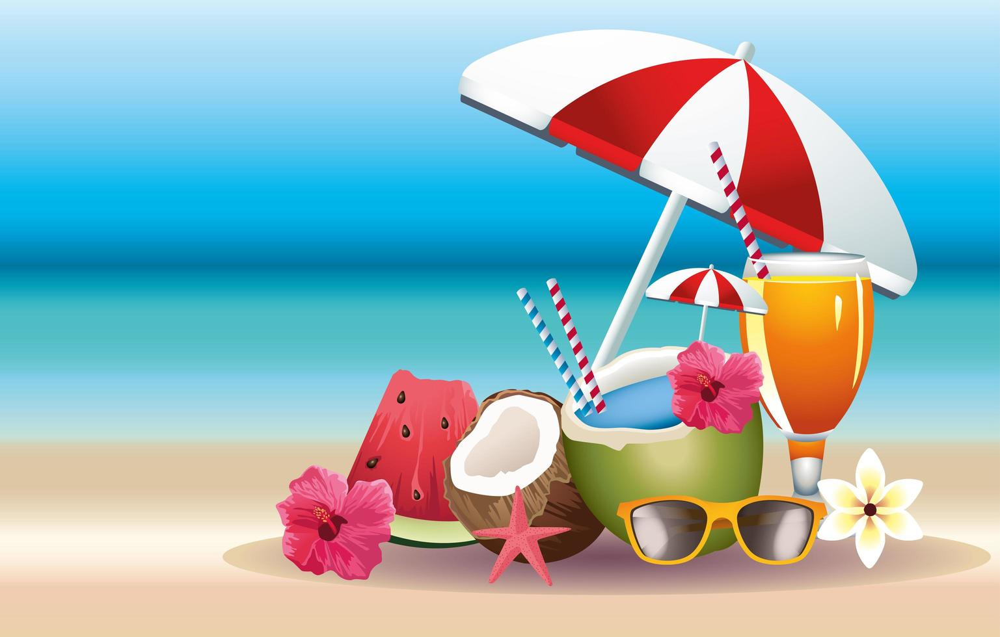

Summer is one of the four temperate seasons, occurring between spring and autumn/fall. It is characterized by longer daylight hours, warmer temperatures, and often more stable weather conditions.

Key Characteristics:
Warm Weather: Summer is known for its warm temperatures, with daytime highs typically ranging from mild to hot, depending on the region. In some areas, temperatures can soar to extreme levels, leading to heatwaves.
Longer Days: Summer days are longer than those of any other season, with the sun rising early and setting late. This extended daylight provides more time for outdoor activities and leisure pursuits.
Outdoor Recreation: Summer is a popular time for outdoor recreation and leisure activities, such as swimming, hiking, camping, barbecues, picnics, and outdoor sports like baseball and soccer.
Vacations and Travel: Many people take advantage of the summer season to go on vacations, road trips, or travel to destinations with beaches, mountains, or other attractions. It's a peak time for tourism in many regions.
Festivals and Events: Summer is often associated with festivals, concerts, fairs, and outdoor events, ranging from music festivals and food fairs to county fairs and cultural celebrations. These events celebrate the season and bring communities together.
Growth and Abundance: Summer is a time of growth and abundance in nature, with plants thriving and producing fruits, vegetables, and flowers. Farmers harvest their crops, and gardens are in full bloom.
Weather Variability: While summer is generally warm and sunny, it can also experience variability in weather, including thunderstorms, rain showers, and even occasional hurricanes or tropical storms in certain regions.
Seasonal Foods: Summer brings an abundance of seasonal foods, including fresh fruits like berries, watermelon, and peaches, as well as vegetables like tomatoes, corn, and cucumbers. These foods are enjoyed in salads, smoothies, and refreshing dishes.
Health Risks: While summer is a time of enjoyment, it's important to be mindful of health risks associated with heat, such as dehydration, sunburn, heat exhaustion, and heatstroke. Staying hydrated, wearing sunscreen, and seeking shade are essential precautions.